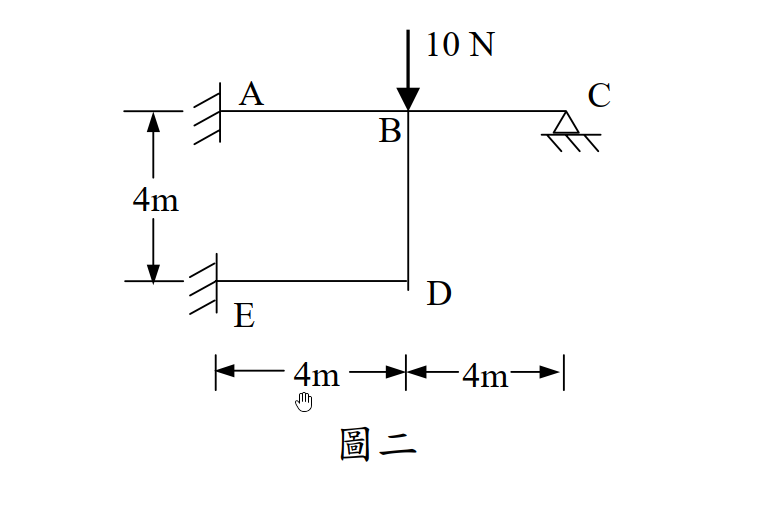

考題編號：[SA-2005-2]
主分類： SA-U2-3 靜不定結構分析
副分類： 無
分析法： 傾角變位法
標籤： 剛架分析 側移 傾角變位法 剪力方程式
1. 原始題目重述 (Problem Restatement)
本題為一受垂直載重之剛架結構，幾何及邊界條件如下：
- 節點與支承：A、E 兩點為固端支承（Fixed），C 點為鉸支承（Hinge）。B、D 為剛節點。
- 桿件配置與長度：AB、ED、BC 為水平桿，BD 為垂直桿。各桿件長度皆為 4m。
- 斷面性質：每根桿件之抗彎剛度 $EI$ 均為常數。
- 載重：B 點承受一垂直向下之集中載重 $P = 10\text{ N}$。
- 求：各桿件之桿端彎矩。

圖說：構架高為4m，水平跨距各段為4m。A點與E點為固端，C點為鉸支承。B點承受垂直向下的10 N載重。
2. 考題核心精神與出題者意圖 (Core Concepts & Examiner's Intent)
本題測驗考生對剛架側移（Sway）自由度的判斷及剪力方程式（Sway Equation）的建立。
核心意圖包含：
- 側移判斷：A、E為固端，水平側移受限；但 B、D 節點可共同產生垂直向之位移，導致水平桿件（AB, BC, ED）產生弦切角（Chord Rotation）。
- 剪力方程式：須藉由整體或各桿件之垂直力平衡，推導出彎矩與外力間的關係式以補足未知數。
- 鉸接端修正：C端為鉸支承，利用修正之傾角變位方程式可減少一個未知數（$\theta_C$）。
3. 解題戰略地圖與陷阱分析 (Strategic Roadmap & Trap Analysis)
-
戰略一：設定自由度與參數
定義未知位移為節點旋轉角 $\theta_B$、$\theta_D$ 及垂直下陷量 $\Delta$。
為簡化計算，令相對勁度 $K = \frac{EI}{L} = \frac{EI}{4}$，弦切角參數 $R = \frac{\Delta}{L} = \frac{\Delta}{4}$。 -
戰略二：建立傾角變位方程式
依各桿件弦切角方向，寫出 $M_{AB}, M_{BA}, M_{BC}, M_{ED}, M_{DE}, M_{BD}, M_{DB}$。 -
戰略三：建立節點平衡方程式
於 B 點：$\sum M_B = 0 \Rightarrow M_{BA} + M_{BC} + M_{BD} = 0$
於 D 點：$\sum M_D = 0 \Rightarrow M_{DE} + M_{DB} = 0$ -
戰略四：建立垂直剪力方程式
藉由計算 AB、ED、BC 三根水平桿件之端點垂直剪力，並代入整體垂直力平衡 $\sum F_y = 0$，得到第三條方程式。 -
⚠️ 陷阱分析：
1. 弦切角正負號：若假設 B、D 向下位移 $\Delta$，AB 與 ED 之弦切角為順時針（正），BC 之弦切角則為逆時針（負）。
2. 剪力方向判斷：建立剪力方程式時，極易因符號約定錯誤而導致方程式正負號顛倒。建議畫出各桿件分離體圖，確保剪力與彎矩關係無誤。
3.5 變數層次分析 (Variable Hierarchy Analysis)
最終目標
求出構架中每根桿件的端點彎矩
本題關鍵公式（依計算順序）
-
桿端彎矩傾角變位方程式：
$$M_{ij} = \frac{2EI}{L}(2\theta_i + \theta_j - 3\psi_{ij}) + FEM_{ij}$$ -
鉸接端修正傾角變位方程式：
$$M_{ij} = \frac{3EI}{L}(\theta_i - \psi_{ij}) + FEM_{ij}$$ -
節點力矩平衡方程式：
$$\sum M_{joint} = 0$$ -
水平桿件剪力與彎矩關係（以左端A/E、右端C向上為正）：
$$V_{L} = -\frac{M_{ij} + M_{ji}}{L} \quad ; \quad V_{R} = \frac{M_{ij} + M_{ji}}{L}$$ -
整體結構垂直力平衡（剪力方程式）：
$$\sum V_y = \sum F_{ext,y}$$
L1：題目直接給定
| 符號 | 數值 | 說明 |
|---|---|---|
| $L$ | 4 m | 各桿件長度 |
| $P$ | 10 N | B 點垂直向下集中載重 |
| $EI$ | 常數 | 各桿件抗彎剛度 |
L2：需知識點推導
| 符號 | 公式／來源 | 卡關? |
|---|---|---|
| 自由度與參數 | ||
| $K$ | $EI / L$ | |
| $R$ | $\Delta / L$ | 垂直下陷造成之基本弦切角 |
| $\psi_{AB}, \psi_{ED}$ | $R$ (順時針) | |
| $\psi_{BC}$ | $-R$ (逆時針) | |
| $\psi_{BD}$ | 0 | |
| 平衡方程式 | ||
| 節點B | $M_{BA} + M_{BC} + M_{BD} = 0$ | |
| 節點D | $M_{DE} + M_{DB} = 0$ | |
| 整體剪力 | $V_A + V_E + V_C = 10$ |
L3：深層知識（不懂就卡住）
| 知識點 | 說明 | 卡關? |
|---|---|---|
| 剪力方程式推導 | 必須由各水平桿端彎矩求出支承垂直反力，再利用整體垂直平衡建立方程式。 | |
| 弦切角方向判斷 | B點下陷時，AB桿右端下降（順時針弦切角），BC桿左端下降（逆時針弦切角）。 |
4. 步驟化詳細計算過程 (Step-by-Step Detailed Calculation)
Step 1：定義參數與弦切角
令各桿勁度為 $K = \frac{EI}{4}$。
假設節點 B、D 產生向下之側移量 $\Delta$，定義弦切角參數 $R = \frac{\Delta}{4}$。
- AB桿：右端 B 向下，弦切角為順時針 $\psi_{AB} = R$
- ED桿：右端 D 向下，弦切角為順時針 $\psi_{ED} = R$
- BC桿：左端 B 向下，弦切角為逆時針 $\psi_{BC} = -R$
- BD桿：兩端同步向下，無相對側移，$\psi_{BD} = 0$
邊界條件：$\theta_A = 0$, $\theta_E = 0$。無桿件載重，各桿 $FEM = 0$。
Step 2：建立傾角變位方程式
代入公式 $M_{ij} = 2K(2\theta_i + \theta_j - 3\psi)$ 及鉸端修正公式：
$$M_{AB} = 2K(0 + \theta_B - 3R) = 2K\theta_B - 6KR$$
$$M_{BA} = 2K(2\theta_B + 0 - 3R) = 4K\theta_B - 6KR$$
$$M_{ED} = 2K(0 + \theta_D - 3R) = 2K\theta_D - 6KR$$
$$M_{DE} = 2K(2\theta_D + 0 - 3R) = 4K\theta_D - 6KR$$
$$M_{BD} = 2K(2\theta_B + \theta_D - 0) = 4K\theta_B + 2K\theta_D$$
$$M_{DB} = 2K(2\theta_D + \theta_B - 0) = 4K\theta_D + 2K\theta_B$$
對 C 端為鉸接之 BC 桿：
$$M_{BC} = 3K(\theta_B - \psi_{BC}) = 3K(\theta_B - (-R)) = 3K\theta_B + 3KR$$
$$M_{CB} = 0$$
Step 3：建立節點平衡方程式
節點 B：
$$\sum M_B = 0 \Rightarrow M_{BA} + M_{BC} + M_{BD} = 0$$
$$(4K\theta_B - 6KR) + (3K\theta_B + 3KR) + (4K\theta_B + 2K\theta_D) = 0$$
$$\Rightarrow 11K\theta_B + 2K\theta_D - 3KR = 0 \quad \text{--- (1)}$$
節點 D：
$$\sum M_D = 0 \Rightarrow M_{DE} + M_{DB} = 0$$
$$(4K\theta_D - 6KR) + (4K\theta_D + 2K\theta_B) = 0$$
$$\Rightarrow 2K\theta_B + 8K\theta_D - 6KR = 0 \Rightarrow K\theta_B + 4K\theta_D - 3KR = 0 \quad \text{--- (2)}$$
Step 4：建立剪力方程式 (Sway Equation)
取整體結構為分離體，建立垂直力平衡 $\sum F_y = 0$：
$$V_A + V_E + V_C = 10 \text{ (向上為正)}$$
由各桿件力矩平衡求支承反力（設反力皆向上）：
- AB桿：$\sum M_B = 0 \Rightarrow M_{AB} + M_{BA} + V_A \times 4 = 0 \Rightarrow V_A = -\frac{M_{AB} + M_{BA}}{4}$
- ED桿：$\sum M_D = 0 \Rightarrow M_{ED} + M_{DE} + V_E \times 4 = 0 \Rightarrow V_E = -\frac{M_{ED} + M_{DE}}{4}$
- BC桿：$\sum M_B = 0 \Rightarrow M_{BC} + M_{CB} - V_C \times 4 = 0 \Rightarrow V_C = \frac{M_{BC} + 0}{4}$
代入 $\sum F_y = 0$：
$$-\frac{M_{AB} + M_{BA}}{4} - \frac{M_{ED} + M_{DE}}{4} + \frac{M_{BC}}{4} = 10$$
同乘 -4 整理得：
$$M_{AB} + M_{BA} + M_{ED} + M_{DE} - M_{BC} = -40 \quad \text{--- (剪力方程式)}$$
將彎矩展開式代入剪力方程式：
$$(2K\theta_B - 6KR) + (4K\theta_B - 6KR) + (2K\theta_D - 6KR) + (4K\theta_D - 6KR) - (3K\theta_B + 3KR) = -40$$
$$(6K\theta_B - 12KR) + (6K\theta_D - 12KR) - (3K\theta_B + 3KR) = -40$$
$$\Rightarrow 3K\theta_B + 6K\theta_D - 27KR = -40 \quad \text{--- (3)}$$
Step 5：聯立求解
由式 (1) 與式 (2) 消去 $KR$：
$$11K\theta_B + 2K\theta_D = 3KR = K\theta_B + 4K\theta_D$$
$$10K\theta_B = 2K\theta_D \Rightarrow K\theta_D = 5K\theta_B$$
代回求 $KR$：
$$3KR = K\theta_B + 4(5K\theta_B) = 21K\theta_B \Rightarrow KR = 7K\theta_B$$
將 $K\theta_D$ 與 $KR$ 代入式 (3)：
$$3K\theta_B + 6(5K\theta_B) - 27(7K\theta_B) = -40$$
$$(3 + 30 - 189)K\theta_B = -40$$
$$-156K\theta_B = -40 \Rightarrow K\theta_B = \frac{40}{156} = \frac{10}{39}$$
進而得到：
$$K\theta_D = 5 \times \frac{10}{39} = \frac{50}{39}$$
$$KR = 7 \times \frac{10}{39} = \frac{70}{39}$$
Step 6：計算各桿端彎矩
將求得之變數代回傾角變位方程式：
$$M_{AB} = 2\left(\frac{10}{39}\right) - 6\left(\frac{70}{39}\right) = \frac{20 - 420}{39} = -\frac{400}{39} \approx \boxed{-10.26 \text{ N-m}}$$
$$M_{BA} = 4\left(\frac{10}{39}\right) - 6\left(\frac{70}{39}\right) = \frac{40 - 420}{39} = -\frac{380}{39} \approx \boxed{-9.74 \text{ N-m}}$$
$$M_{BC} = 3\left(\frac{10}{39}\right) + 3\left(\frac{70}{39}\right) = \frac{30 + 210}{39} = \frac{240}{39} = \boxed{\frac{80}{13} \approx 6.15 \text{ N-m}}$$
$$M_{CB} = \boxed{0 \text{ N-m}}$$
$$M_{BD} = 4\left(\frac{10}{39}\right) + 2\left(\frac{50}{39}\right) = \frac{40 + 100}{39} = \frac{140}{39} \approx \boxed{3.59 \text{ N-m}}$$
$$M_{ED} = 2\left(\frac{50}{39}\right) - 6\left(\frac{70}{39}\right) = \frac{100 - 420}{39} = -\frac{320}{39} \approx \boxed{-8.21 \text{ N-m}}$$
$$M_{DE} = 4\left(\frac{50}{39}\right) - 6\left(\frac{70}{39}\right) = \frac{200 - 420}{39} = -\frac{220}{39} \approx \boxed{-5.64 \text{ N-m}}$$
$$M_{DB} = 4\left(\frac{50}{39}\right) + 2\left(\frac{10}{39}\right) = \frac{200 + 20}{39} = \frac{220}{39} \approx \boxed{5.64 \text{ N-m}}$$
(註：正值代表順時針，負值代表逆時針)
5. 關鍵爭議點與進階探討 (Critical Issues & Advanced Discussion)
- 虛功原理推導剪力方程式：剪力方程式亦可由虛功原理快速獲得。給定一虛擬向下位移 $\delta\Delta$，外力作功 $W_{ext} = 10 \cdot \delta\Delta$。內力作功（桿端彎矩乘以弦切角）為 $W_{int} = (M_{AB}+M_{BA})(\frac{\delta\Delta}{4}) + (M_{ED}+M_{DE})(\frac{\delta\Delta}{4}) + (M_{BC})(-\frac{\delta\Delta}{4})$。令 $W_{ext} = W_{int}$，同樣可得 $40 = M_{AB} + M_{BA} + M_{ED} + M_{DE} - M_{BC}$。兩種方法結果完全一致，唯虛功法更能檢視符號設定是否統一。
- 結構水平平衡 ($\sum F_x = 0$)：計算結果中水平桿端彎矩會產生柱 BD 之層剪力。為平衡此剪力，固定端 A 與鉸接端 C 必然產生一組水平反力。由於水平桿件假設為軸向剛性（Axially rigid），這屬於內部軸力靜不定問題，但這組力並不影響各桿件之彎矩分佈，故在本題中無須解出個別的水平反力 $H_A, H_C$。